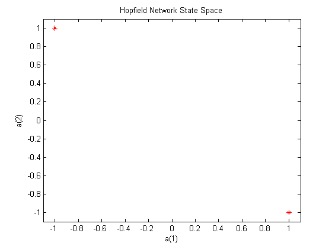
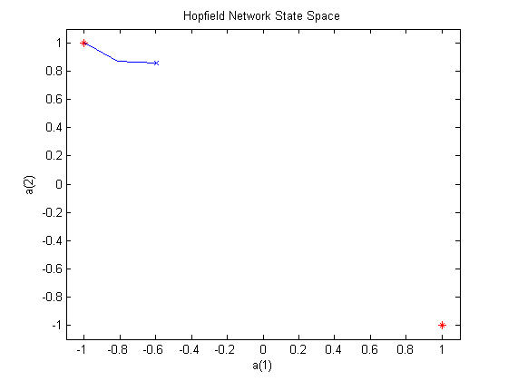
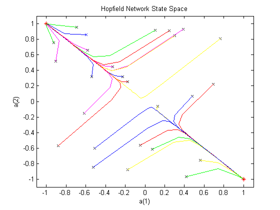

A Two Neuron Hopfield Network
A Hopfield network consisting of two neurons is designed with two stable equilibrium points and simulated using the above functions.
Copyright 1992-2002 The MathWorks, Inc. $Revision: 1.17 $ $Date: 2002/03/29 19:36:23 $
We would like to obtain a Hopfield network that has the two stable points defined by the two target (column) vectors in T.
T = [+1 -1; ...
-1 +1];Here is a plot where the stable points are shown at the corners. All possible states of the 2-neuron Hopfield network are contained within the plots boundaries.
plot(T(1,:),T(2,:),'r*') axis([-1.1 1.1 -1.1 1.1]) title('Hopfield Network State Space') xlabel('a(1)'); ylabel('a(2)');
The function NEWHOP creates Hopfield networks given the stable points T.
net = newhop(T);
First we check that the target vectors are indeed stable. We check this by giving the target vectors to the Hopfield network. It should return the two targets unchanged, and indeed it does.
[Y,Pf,Af] = sim(net,2,[],T); Y
Y =
1 -1
-1 1
Here we define a random starting point and simulate the Hopfield network for 20 steps. It should reach one of its stable points.
a = {rands(2,1)};
[y,Pf,Af] = sim(net,{1 20},{},a);We can make a plot of the Hopfield networks activity.
Sure enough, the network ends up in either the upper-left or lower right corners of the plot.
record = [cell2mat(a) cell2mat(y)];
start = cell2mat(a);
hold on
plot(start(1,1),start(2,1),'bx',record(1,:),record(2,:))We repeat the simulation for 25 more initial conditions.
Note that if the Hopfield network starts out closer to the upper-left, it will go to the upper-left, and vise versa. This ability to find the closest memory to an initial input is what makes the Hopfield network useful.
color = 'rgbmy'; for i=1:25 a = {rands(2,1)}; [y,Pf,Af] = sim(net,{1 20},{},a); record=[cell2mat(a) cell2mat(y)]; start=cell2mat(a); plot(start(1,1),start(2,1),'kx',record(1,:),record(2,:),color(rem(i,5)+1)) end